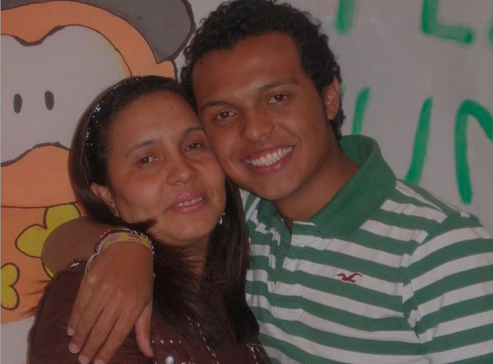

La noche en que Luis Andrés Colmenares murió

Colmenares:
10 años de incertidumbre
La noche del 30 de octubre de 2010, el joven estudiante Luis Andrés Colmenares fue a una fiesta de disfraces con sus amigos de la Universidad y nunca regresó. Su cuerpo fue hallado en el caño El Virrey en la noche siguiente. Diez años después, aún hay muchas preguntas sin responder.

Colmenares:
10 años de incertidumbre
Texto Jairo Patiño
El caso Colmenares está atravesado por las profundas historias personales de las víctimas e implicados. Una de ellas es la de Oneida Escobar, la madre de Luis Andrés, quien nunca creyó la versión de una muerte accidental y cuando el expediente estaba a punto de ser archivado, soñó que su hijo muerto le hacía una revelación.
Solo la voluntad férrea de una madre pudo escribir esta historia. Oneida Escobar convirtió en una obsesión de todos sus días y sus horas averiguar qué ocurrió exactamente con su hijo Luis Andrés Colmenares Escobar, hallado muerto en el caño del parque el Virrey, en Bogotá, la noche del 31 de octubre de 2010.
Y siente que encontró pistas en sus instintos de madre e incluso en conexiones oníricas con su hijo muerto. Meses después de la noche infausta, la del hallazgo del cuerpo en las aguas negras, se lo soñó en una conversación desde el más allá, en la que le decía: “Mami, no busques más. La prueba la tengo en mi cuerpo”.
Y ese sueño, sumado al empeño, terminó labrando un largo camino de preguntas que se propuso resolver. Así fue como convirtió la primera versión que le dieron, la del supuesto accidente o suicidio de su hijo, en una causa judicial que aún, diez años después, está lleno de incertidumbres y tiene instancias pendientes por resolver.
"Me tocó dejar de llorar, para luchar": mamá de Luis Andrés Colmenares
El día trágico
Aquella madrugada en la que Luis Andrés no regresó a casa, Oneida Escobar se enteró de lo que ocurría porque oyó el timbre del celular de Jorge, su hijo menor. Eran cerca de las 4 de la mañana del 31 de octubre. Quienes llamaban eran los amigos de Luis Andrés que se comunicaban con el joven hermano para decirle que, después de la fiesta de disfraces, Luis Andrés había emprendido una carrera descontrolada por la zona del Parque el Virrey y ahora no aparecía.
Quizá los tragos, le dijeron. Quizá cayó a un caño, le aseguraron. Quizá ya salió de entre el agua y regresará a casa, le volvieron a decir. La mamá de los instintos y las premoniciones supo al instante que algo no estaba bien. Entonces, sin dudarlo, salió de su casa junto a Jorge, de 15 años en ese momento, y fue al parque El Virrey para saber qué ocurría.
Fueron esos sus primeros momentos de angustia y pesadilla. Fue en ese momento cuando inició su duro calvario, pero también cuando comenzó a tejer los primeros eslabones de la cadena de preguntas que ya no la dejaría en paz.
El grupo que allí estaba, entre ellos Laura Moreno y Jessy Quintero, entregó su versión de los hechos: Que salieron del bar. Que fueron a buscar un perro caliente. Que Luis Andrés corrió sin control. Que cayó al canal oscuro. Que la policía y los bomberos ya lo buscaron. Que no aparece por ninguna parte.
Laura, Jessy y Carlos Cárdenas:
Las otras caras del Caso Colmenares
ver más
View moreOneida, simplemente, no creyó. Sabía que su hijo quien había estudiado en un colegio a pocas cuadras de allí, conocía la zona. Para ella ese hecho descartaba la caída accidental. Y no encontró tampoco motivo alguno para creer en la versión del suicidio. Esa madrugada no se metió al caño a buscarlo porque no la dejaron.
La madrugada se disolvió y los compañeros universitarios se marcharon. Pero Oneida Escobar se quedó. Hizo una ronda por los hospitales y clínicas de las zonas cercanas. Preguntó a quien pudo y quiso oírla, simplemente no dejó de buscar.
El día avanzó de nuevo y los compañeros regresaron a la zona. Ya había entrado la tarde del día posterior a la fiesta. Y mientras las horas avanzaban las dudas en la madre crecían. Cuando ya fue nuevamente de noche, fue ella y su voluntad férrea quien logró que regresaran los bomberos y volvieron a buscar en el subterráneo por donde avanza el desagüe.
Triste final
Luis Andrés Colmenares fue hallado boca abajo, con la cabeza en dirección contraria a la corriente, el rostro volteado y la mejilla izquierda contra los ladrillos del canal. Cuando los peritos que hicieron el levantamiento voltearon el cuerpo, pudieron ver varias heridas en la cara y la cabeza y dejaron la evidencia correspondiente en las fotos forenses.
Esos detalles, como las heridas en el rostro, eran insumos para el camino de dudas que Oneida Escobar seguía atravesando.
Por eso fue cuestión de días, de horas tras el impacto brutal del hallazgo y el entierro de su hijo, para que la madre siguiera su búsqueda. Su determinación la llevó por un camino de no retorno. Se convirtió en visitante diaria de los despachos de los fiscales, a quienes les mantuvo presente el caso y sus dudas.
Visitó tanto como pudo la Universidad de los Andes y en cafeterías y pasillos, preguntó, dudó y volvió a preguntar. Habló con Laura Moreno, con Jessy Quintero, con cada uno de los que estuvo en la fiesta y aparece en la foto de los disfraces, aquella en la que su hijo se le ve feliz y desabrochado.
Insistió. Pidió que le dijeran la verdad. Y tantas dudas y voluntad férrea fueron las que evitaron que el caso fuera archivado. Al contrario, ella misma se convirtió en combustible para el primer escrito de acusación, la práctica inicial de pruebas (que incluyó la interceptación de los teléfonos de los universitarios) y la primera solicitud formal ante un juez que desembocó en una decisión del 7 de octubre de 2011, casi un año exacto después de la muerte de su hijo.
Luis Alonso Colmenares:
el camino hacia el perdón
ver más
View moreEse día, el caso fue asumido por la justicia como un posible asesinato y fueron capturadas Laura Moreno y Jessy Quintero, acusadas de encubrir la muerte violenta de su compañero de la Universidad de los Andes, Luis Andrés Colmenares.
El resto de la historia está contada en varios libros, documentales, series y miles de folios del expediente, pero aún están pendientes las páginas finales: las que tiene que escribir el Tribunal Superior de Bogotá, cuando resuelva la apelación al fallo que absolvió y declaró inocentes de responsabilidad a Jessy Quintero y Laura Moreno.
Créditos
Directora Multimedia -
Jefe de Redacción:
Jefe de redacción digital:
Jefe de Redacción:
María Elena Romero
Jefe de redacción digital:
Dora Montero
Periodistas:
Andrea Jaramillo
Jairo Patiño
Alejandro Callejas
Carlos Arturo Albino
Florencio Sánchez
Realización:
Diseño:
Javier Vargas
Diseño:
Steffania Santamaria